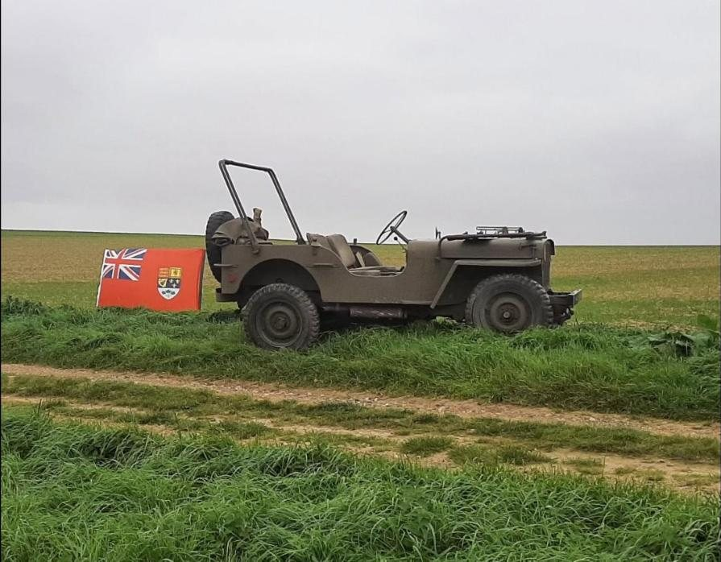

—Mai
Camp de reconstitution de printemps
Lieu et dates communiqués prochainement
06Juin
Commémorations du Débarquement
Programme des cérémonies du 6 juin — Calvados
—Été
Fêtes de la Libération
Participation aux événements des communes partenaires
11Nov.
Cérémonies de l'Armistice
Hommage aux combattants des deux guerres mondiales
// Suivez notre page Facebook pour connaître les dates exactes et les dernières actualités.
Vous organisez un événement ?
Commémoration, fête de la Libération, journée historique : nous pouvons installer un camp, présenter du matériel d'époque ou participer à une cérémonie.
